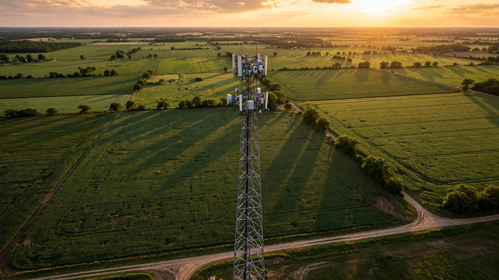

Cell Tower Lease Rate Intelligence SaaS for Property Owners
Vertical Consultants, a firm that renegotiates cell tower leases on behalf of property owners, reports that its 2024 renegotiations produced an average immediate rent increase of 308 percent. Not 30 percent. Not even 100 percent. Three hundred and eight. That number means the typical property owner who signed a tower lease without market data is collecting roughly a quarter of what the site is actually worth, locked into a contract that runs 30 to 50 years with automatic renewals the carrier controls.

The Problem
The United States has 158,500 purpose-built cellular towers and 254,850 macrocell sites as of the end of 2025, according to the Wireless Infrastructure Association's annual report prepared by research firm iGR. Add the 198,100 outdoor small cells now deployed for 5G densification, and the physical footprint of wireless infrastructure touches hundreds of thousands of private properties, municipal buildings, church steeples, hospital rooftops, farm fields, and commercial parking lots across every state. Steel in the Air estimates more than 350,000 active tower ground leases exist in the U.S., each one a contract between a property owner and a tower company or wireless carrier.
Total wireless infrastructure investment hit nearly $65 billion in 2025 (WIA/iGR). The three largest tower companies alone collected massive site rental revenues last year: American Tower reported $10.6 billion in 2025 property revenue with a raised 2026 forecast of $10.59 to $10.74 billion; Crown Castle managed over 40,000 towers generating $4.3 billion in FY 2025 site rental revenue; and SBA Communications brought in $2.78 to $2.83 billion after raising its annual forecast on carrier activity that exceeded expectations. These companies exist in the gap between what wireless carriers pay for network access and what property owners receive for hosting the equipment. The spread is enormous, and it flows in one direction.
The information asymmetry that enables this spread is almost comically lopsided. Tower companies maintain proprietary databases covering hundreds of thousands of lease agreements. American Tower alone operates roughly 225,000 sites across 25 countries. They know, to the dollar, what every comparable property in a given market commands. The property owner on the other side of the table has one lease, zero comparable data, and a local attorney who has probably never reviewed a cell tower agreement before. Cell tower lease rents signed in 2026 range from $500 a month for rural single-tenant ground leases to $6,500 and above for multi-carrier urban rooftops, according to Vertical Consultants' Cell Tower AI database of 300,000-plus U.S. cell sites. The average ground lease sits around $1,250 per month (Steel in the Air, 2025 data), while the average collocation rate (a second or third carrier on the same tower) runs $2,400 per month. Two similar properties a few miles apart can receive offers that differ by thousands of dollars, and the landowner has no way to know which end of that range they occupy.
The current remedy for this information deficit is a cottage industry of lease consultants who work on contingency, typically taking 30 to 50 percent of the rent increase they negotiate. Steel in the Air and Vertical Consultants are the two most prominent firms. They provide genuine value: Vertical Consultants' reported 308 percent average rent increase on renegotiated leases proves the magnitude of the pricing gap. But the contingency model means the consultant captures a third or more of the recovered value, and it creates a structural incentive to work only with property owners whose leases are dramatically undervalued. A church collecting $900 per month for a rooftop antenna on a site worth $2,800 is a lucrative client for a contingency consultant. A farmer collecting $1,100 for a site worth $1,500 is not worth the phone call. The long tail of moderately underpriced leases gets no professional attention at all.
Market Size
TAM calculation: More than 350,000 active cell tower ground leases in the United States (Steel in the Air estimate). The addressable segment for a lease rate intelligence SaaS product is any property owner with an active lease, a pending lease offer, or a buyout proposal. Not all will pay for software, but the decision stakes are high: a lease running 30 to 50 years at $1,250 per month represents $450,000 to $750,000 in total payments, and the difference between market rate and below-market rate can exceed $500 per month, compounding to $180,000 or more over the lease term. At a subscription price of $29 per month for a Basic tier (rate benchmarking and lease term analysis) and $99 per month for a Professional tier (active negotiation intelligence, buyout evaluation, and market alerts), with an estimated 70/30 split, the blended ARPU is $50 per month. At 350,000 addressable lease holders, the theoretical TAM is $210 million in ARR.
More realistically, the initial addressable market narrows to property owners approaching lease renewal (roughly 70,000 leases per year enter a 5-year renewal window), those receiving unsolicited buyout offers (Steel in the Air notes these are proliferating), and municipalities managing portfolios of tower leases on public property (an estimated 35,000 to 45,000 leases on government-owned land). At a realistic penetration of 15,000 subscribers in Year 3 across all tiers, ARR reaches $9 million. Adding an enterprise tier for municipal and institutional property managers at $299 per month with 500 subscribers contributes another $1.8 million, for a Year 3 target of $10.8 million ARR.
A second revenue layer targets the 3,500 to 6,000 new towers built annually (WIA data) and the rapidly expanding small cell deployment (198,100 outdoor small cells already installed, growing at double-digit rates). Property owners receiving first-time lease offers represent a recurring flow of high-intent customers who will pay for market intelligence before signing a 25-year contract. At an average one-time report fee of $149 for a "New Lease Evaluation" covering comparable rates, term analysis, and red-flag identification, with 8,000 reports per year, this adds $1.2 million in transaction revenue.
The Product
A lease rate intelligence platform purpose-built for cell tower property owners, combining public FCC licensing data, crowdsourced lease terms from participating subscribers, municipal rate schedules (many are public record), and machine-learning estimation models trained on disclosed transactions to produce the first standardized rate benchmarking tool for tower leases. Core modules:
- Rate benchmarking engine: The single most valuable question a property owner can answer is "What are comparable sites getting paid?" This module returns anonymized rate benchmarks for the owner's specific geography, tower type (ground mount, rooftop macro, small cell), carrier profile (single-tenant vs. multi-tenant), and site characteristics (height, visibility, zoning restrictions, proximity to highways or population centers). The output: a percentile ranking of the owner's current lease against comparable sites, with a confidence interval based on data density in the area. A farmer in central Kansas seeing "$1,100/month, 34th percentile for rural ground leases in the region" immediately knows the conversation he needs to have at renewal
- Lease term analyzer: Cell tower leases contain dozens of clauses that affect long-term economics beyond the headline rent: escalation rates (2 percent vs. 3 percent vs. CPI-indexed compounds dramatically over 30 years), automatic renewal provisions the carrier controls, equipment modification rights that allow the carrier to add tenants without increasing the owner's rent, right of first refusal clauses that depress the property's resale value, and ground area expansion terms. This module parses uploaded lease documents (PDF or photo) against a library of clause archetypes and flags terms that deviate from market norms in the owner's favor or against it
- Buyout offer evaluator: Tower lease buyout firms (MD7, Landmark Infrastructure Partners, Tillman Infrastructure, and dozens of smaller shops) are aggressively contacting property owners with lump-sum offers to purchase their lease income streams. These offers are structured as a multiple of annual rent, and the right multiple depends on tenancy count, remaining term, carrier credit quality, and relocation risk. No published standard exists. This module runs a present-value analysis of the owner's future rent stream under various scenarios (current terms, renegotiated terms, additional tenant colocation) and compares it to the buyout offer, outputting a clear "accept/reject/negotiate" recommendation with the specific dollar amount the owner is leaving on the table
- 5G small cell lease intelligence: The fastest-growing segment of new leases involves small cells mounted on utility poles, streetlights, building facades, and other urban infrastructure. Municipalities are negotiating these agreements with limited precedent and wide rate variation. This module aggregates small cell franchise agreements, right-of-way fees, and per-node rents from public records across jurisdictions to provide rate benchmarks for this emerging lease category, where the California Department of General Services alone publishes annual rate guidelines ranging from $26,000 to $76,863 per year depending on cell type and location tier
- Carrier activity alerts: FCC licensing data, building permit filings, and zoning applications are public records that reveal where carriers plan to build next. When a carrier files for a new site within a defined radius of a subscriber's property, the alert fires. This turns a reactive landowner into a proactive one who knows their leverage before the carrier's land agent shows up with a lease offer
Unit Economics
| Metric | Value |
|---|---|
| Monthly subscription (Basic: rate benchmarks + lease analysis) | $29/property |
| Monthly subscription (Professional: full intelligence suite) | $99/property |
| Monthly subscription (Enterprise: municipal/institutional portfolios) | $299/portfolio |
| Blended ARPU | $50/month |
| One-time new lease evaluation report | $149 |
| Data infrastructure cost per subscriber/month | $4 |
| FCC/public records ingestion cost per subscriber/month | $2 |
| Customer acquisition cost | $180 |
| Expected LTV (24-month avg retention, 88% gross margin) | $1,056 |
| LTV:CAC ratio | 5.9:1 |
| Gross margin | 88% |
| Startup cost (18-month runway) | $1.9M |
| Break-even | 16 months |
Methodology note: The 24-month average retention assumes that property owners subscribe during a lease event (renewal, buyout offer, new lease negotiation) and retain through the resolution cycle, which typically spans 6 to 18 months of carrier back-and-forth, then churn once the deal closes. A subset (estimated 30 percent) retains indefinitely for ongoing market monitoring and future renewal intelligence, extending effective LTV. CAC of $180 reflects a bottom-up digital acquisition model targeting property owners through Google search (high-intent keywords like "cell tower lease rates" and "cell tower lease buyout offer"), content marketing on existing property owner forums, and direct partnerships with state Farm Bureau chapters and municipal associations. Gross margin of 88% reflects a software-plus-public-data model where the primary costs are FCC database ingestion, NLP processing of lease documents, and cloud infrastructure. The LTV calculation: $50 times 24 months times 88 percent gross margin equals $1,056. Payback period: 3.6 months.
Go-to-Market
Phase 1 (months 1-8): Build the rate benchmarking engine using three publicly available data sources that require no crowdsourcing to bootstrap: (1) FCC Antenna Structure Registration data, which identifies every registered tower's coordinates, height, and owner of record; (2) county property tax records, which in many jurisdictions disclose lease income from telecommunications equipment as a line item for assessment purposes; and (3) state and municipal telecommunications lease rate guidelines, such as California's DGS rate schedule, which sets floor prices by cell type and urbanization tier. Simultaneously, launch a free "Lease Check" tool that lets any property owner enter their address, tower type, and current rent to receive an instant percentile estimate. This tool is the acquisition funnel: every user who enters their lease data contributes to the anonymized benchmarking database, creating a data flywheel where each new subscriber makes the product more valuable for every other subscriber.
Phase 2 (months 9-16): Monetize with the $29/month Basic tier. Expand distribution through partnerships with the American Farm Bureau Federation (6 million member families, many of whom have tower leases on agricultural land), the National Association of Counties (NACo), and state leagues of municipalities. Launch the Professional tier with lease document analysis (NLP-powered clause extraction and red-flag detection) and the buyout evaluator. Begin integration with county assessor databases to enrich the rate benchmarking model with disclosed lease values from property tax records, which are public in most states.
Phase 3 (months 17-24): Launch the Enterprise tier targeting municipal and institutional property managers who oversee portfolios of 10 to 500 tower leases (large cities, school districts, state agencies, hospital systems). Add the carrier activity alert module using real-time FCC license filings and building permit data. Explore a referral marketplace that connects property owners with vetted lease consultants for complex negotiations, earning a 10 to 15 percent referral fee on the consultant's engagement, creating an alignment where the SaaS product handles the 80 percent of lease situations that are straightforward and routes the complex 20 percent to human experts.
Competitive Landscape
| Company | What It Does | Rate Intelligence? | Pricing |
|---|---|---|---|
| Steel in the Air | Lease consulting for property owners (renegotiation, buyout evaluation) | Proprietary database, but intelligence delivered through consulting engagements, not SaaS | Contingency: ~30-40% of rent increase |
| Vertical Consultants / Cell Tower AI | Lease consulting + proprietary 300K-site database | Yes, internally. Not available as a self-service product for property owners | Contingency: ~30-50% of rent increase |
| MD7 | Lease optimization and buyout for carriers AND property owners | Works both sides; recently received investment to buy leases directly | Varies; conflict of interest is structural |
| TowerPoint Capital | Buys lease income streams from property owners | No: buyer, not advisor | Lump-sum buyout offers |
| Wireless Estimator | Industry news and lease information portal | Editorial guidance, no structured data product | Free (ad-supported) |
| This startup | Self-service rate benchmarking, lease analysis, and negotiation intelligence | Core product: anonymized rate analytics accessible to any property owner for $29-99/month | $29-299/month SaaS |
The competitive gap is clear and structural: the entities with the best data (tower companies and lease consultants) have no incentive to make it widely available. Tower companies profit from information asymmetry directly. Lease consultants profit from it indirectly, because their contingency model depends on a large spread between current rent and fair market value. A SaaS product that narrows this spread for $29 per month threatens the consultant's 30 to 50 percent commission on a $500 to $1,500 monthly rent increase. But it serves the 80 percent of property owners whose leases are moderately underpriced and who will never hire a contingency consultant because the absolute dollar upside does not justify the consultant's fee. This is the classic "good enough for the long tail" disruption pattern that Turbo Tax executed against CPAs and that LegalZoom executed against attorneys: not replacing the expert for complex cases, but democratizing basic intelligence for the mass market.
Why Now
Four forces are converging to make this the right moment. First, 5G densification is creating a wave of new lease negotiations at a pace the industry has not seen since the original tower buildout of the 1990s. The 198,100 outdoor small cells deployed by end of 2025 are just the beginning; analysts project the U.S. will need 800,000 to 1 million small cell sites by 2030 to deliver the capacity that 5G mid-band and millimeter-wave spectrum require. Each small cell needs a host site, and municipalities and property owners are negotiating these agreements with almost no market data. The California DGS rate guidelines exist because the state recognized this problem for government properties, but no equivalent exists for private landowners or for states outside California.
Second, the carrier-side lease optimization industry has industrialized. Companies like MD7 now receive carrier email addresses (AT&T and Verizon give third-party contractors @att.com and @verizon.com addresses to make their rent-reduction outreach appear official, according to Steel in the Air), and their agents earn commissions based on rent reductions extracted from property owners over 7- to 10-year periods. These contractors contact property owners with implied threats: accept reduced rent and extended terms, or the carrier will relocate. The threat is almost always hollow (tower relocation costs $250,000 to $500,000 and takes 18 to 36 months including permitting), but an uninformed landowner has no way to evaluate it. The professionalization of the "squeeze the landowner" side demands a corresponding professionalization of the landowner's intelligence capability.
Third, public data infrastructure has matured to a point where bootstrapping a rate database without relying on crowdsourcing alone is feasible. The FCC's Antenna Structure Registration database, county property tax assessor records (increasingly digitized and API-accessible through platforms like ATTOM Data), municipal telecommunications rate schedules, and zoning board hearing minutes collectively contain enough signal to build a viable cold-start benchmarking model. Five years ago, this data was scattered across PDFs in county clerk offices. Today, enough of it is machine-readable to build an MVP without the chicken-and-egg problem that kills most data marketplace startups.
Fourth, Steel in the Air explicitly warns that property owners are now using AI chatbots to generate lease counteroffers, and the results are dangerously inaccurate: "AI chatbots often suggest 'fair market rates' that are more than double the actual rate for a specific area. They also recommend lease terms such as revenue share and termination rights for the landowner, which are beneficial. But in many cases, requesting these will push the interested carrier or tower company to a neighboring property." The market is telling you that property owners are actively seeking automated intelligence tools and finding nothing reliable. The demand exists. The supply does not.
Original Contribution: The Ground Rent Extraction Ratio
A calculation nobody has published: What fraction of the total economic value generated by a cell tower site flows to the property owner who hosts it? We can estimate this from publicly available data. The average U.S. ground lease pays approximately $1,250 per month, or $15,000 per year (Steel in the Air, 2025). The average tower hosts 2.2 tenants (derived from the ratio of 350,000 leases across 158,500 towers). Each tenant pays the tower company for antenna space, backhaul, power, and ground access. American Tower's U.S. property revenue divided by its U.S. tower count implies average site-level revenue to the tower company of approximately $35,000 to $42,000 per year per tower (based on $10.6 billion total property revenue, with roughly 43,000 U.S. towers and an allocation for international operations). The tower company pays the ground lease out of that revenue.
This means the ground rent extraction ratio, the share of total site economics captured by the property owner, is approximately $15,000 / $38,500 = 39 percent. The tower company retains 61 percent for operations, maintenance, capital recovery, and profit. That 39 percent is the headline number. But for property owners who signed leases at below-market rates (which Vertical Consultants' 308 percent renegotiation uplift suggests is the majority), the actual extraction ratio drops to 15 to 25 percent. In dollar terms: 350,000 ground leases at $15,000 average annual rent equals $5.25 billion in total ground rent paid. If the market-clearing average is $21,000 (a conservative 40 percent uplift implied by the distribution of renegotiation outcomes), the total fair-value ground rent is $7.35 billion, meaning U.S. property owners collectively forfeit approximately $2.1 billion per year in below-market lease payments.
This $2.1 billion annual forfeit is the addressable value pool for a lease rate intelligence product. A SaaS platform that helps even 5 percent of affected property owners capture even 50 percent of their individual gap would recover $52.5 million per year for its subscribers, making a $29 to $99 monthly subscription trivially justified on ROI terms.
Limitations
Several weaknesses in this analysis deserve plain acknowledgment. First, the 308 percent average rent increase cited from Vertical Consultants is subject to severe selection bias. Lease consultants cherry-pick the most dramatically underpriced leases as clients because their contingency compensation scales with the rent increase. The median lease may be underpriced by 20 to 40 percent, not 300 percent. Our $2.1 billion forfeit estimate uses a conservative 40 percent uplift assumption, but even that may overstate the average gap if the truly underpriced tail is smaller than the consultant-reported numbers suggest.
Second, the cold-start data problem for rate benchmarking is real. FCC registration data tells you where towers are and who owns the structure, but it does not disclose lease rates. County assessor records disclose lease income inconsistently: some jurisdictions use it for tax assessment, others do not. Municipal rate schedules like California's DGS guidelines exist in only a handful of states. The bootstrapping strategy depends on crowdsourced lease data from early subscribers, which creates a geographic density problem: the product works well in markets with many subscribers and poorly in markets with few. This is the same cold-start problem that STR solved in hotels over decades, not months.
Third, the retention model is uncertain. Cell tower leases are reviewed once every 5 years at renewal, and buyout offers come sporadically. A property owner who resolves their lease event may not perceive ongoing value in a $29/month subscription until the next event, which could be years away. The 24-month average retention assumption may be optimistic if churn spikes after lease resolution. The counter-argument is that carrier optimization firms (MD7, etc.) contact the same property owners repeatedly, creating ongoing demand for defensive intelligence, but this has not been tested at SaaS scale.
Fourth, lease consultants could respond competitively. Steel in the Air and Vertical Consultants already possess the most comprehensive private databases in the industry. Either firm could launch a SaaS benchmarking product tomorrow and undercut a startup with vastly superior data from day one. Vertical Consultants' "Cell Tower AI" branding suggests they are already thinking about productizing their data. The startup's defensibility depends on building a crowdsourced data network that is broader (if thinner) than any single consultancy's database, and on the structural misalignment between a consultancy's contingency revenue model and a low-cost SaaS model.
Strongest Counterargument
The strongest case against this startup is that the property owners who need rate intelligence the most are the ones least likely to buy SaaS, and the ones sophisticated enough to buy SaaS probably don't need it. Consider the customer profile. The typical cell tower lease holder is a rural landowner, a small-town church, a family farm, a volunteer fire department, or a municipal government managed by elected officials with no real estate expertise. These are not SaaS buyers. They do not search for "lease rate intelligence" on Google. Many of them do not know their lease is underpriced, and the ones who suspect it often lack the confidence to negotiate with a Fortune 500 carrier or a publicly traded tower REIT even with data in hand.
The lease consulting industry exists precisely because this market needs a human intermediary, not a dashboard. A contingency consultant who calls a church treasurer and says "I will handle everything, you pay nothing unless I get you more money" is a dramatically easier sell than a $29/month subscription to software the treasurer has to learn, interpret, and act on. The consultant model's 30 to 50 percent fee is not a tax on information asymmetry; it is the price of agency. The consultant does not just provide data. They make the phone calls, send the demand letters, manage the carrier's bluffs, and absorb the emotional labor of confrontation that most property owners would rather avoid entirely.
The LegalZoom and TurboTax analogies are instructive but imperfect. Tax filers interact with the IRS annually and have a lifetime of growing sophistication about the process. Cell tower lease holders interact with their carrier once every five years and may go through the entire process only twice in their life. There is no opportunity to build the recurring engagement that makes SaaS retention work. A property owner who uses the tool once at renewal has no reason to return until 2031, and by then, a free AI tool or a new consultant may have made the product obsolete.
The viable path may be a hybrid: a SaaS data layer that powers human consultants rather than replacing them, earning referral commissions on complex engagements while generating subscription revenue from the minority of property owners (municipal portfolio managers, commercial REIT operators, sophisticated individual investors) who actually consume data products. If that is the real business, then the TAM shrinks by an order of magnitude, and the $10.8 million Year 3 target becomes aspirational.
The Bottom Line
The U.S. cell tower ground lease market is a $5.25 billion annual income stream for property owners who collectively forfeit an estimated $2.1 billion per year because they have no access to comparable rate data. The entities with the best intelligence (tower companies with 300,000-lease databases, carrier optimization firms with corporate email aliases designed to pressure landowners, and consultants who capture 30 to 50 percent of recovered value) all profit from the current opacity. The 5G buildout is generating thousands of new lease negotiations per year, AI chatbots are giving property owners dangerously wrong counteroffers, and public data infrastructure has finally matured enough to bootstrap a benchmarking model without pure crowdsourcing. The customer acquisition challenge is real: most lease holders are not natural SaaS buyers, and the retention curve for an event-driven product is uncertain. But the value proposition is among the clearest in this series: if you can show a property owner that their $1,100/month lease should be $1,800/month, the $29 subscription pays for itself in a single month's rent increase, every month, for the remaining 25 years of the lease.
What You Can Do
If you have a cell tower on your property: pull your lease and find four numbers. Your monthly rent. Your annual escalation rate. Your current term expiration date. The number of carriers on the tower (check the equipment compound or ask your tower company). Then find the FCC Antenna Structure Registration for your tower at wireless2.fcc.gov and note the registration number, tower height, and owner. Next, ask your county assessor's office whether telecommunications lease income is recorded in your property tax assessment; if it is, request the records for towers on neighboring properties within 5 miles. You now have more comparable data than 95 percent of tower lease holders in the country. If your rent is below $1,250 per month for a ground lease or below $2,400 for a rooftop, and you are in a suburban or urban area, there is a high probability you are being underpaid. Do not sign an extension or accept a buyout offer without at least running a present-value analysis of your remaining rent stream at a 6 percent discount rate versus the lump sum offered. If you are a municipality managing tower leases on public property: review California's DGS Telecommunications Rate Guidelines as a reference for what structured, tiered pricing looks like. Your taxpayers are almost certainly leaving money on the table, and the data to prove it is already public.
Related
📰 Equipment Rental Rate Intelligence SaaS — the same information asymmetry problem in another fragmented, opaque market where big players know the rates and small operators guess
📰 Manufactured Housing Lot Rent Optimization SaaS — another captive-tenant market with long lease durations, limited supply, and wide rate dispersion that no benchmarking tool serves
📰 Marina Slip Yield Management SaaS — parallel dynamics of institutional consolidation extracting value from fragmented owner-operators who price by gut and neighbor calls